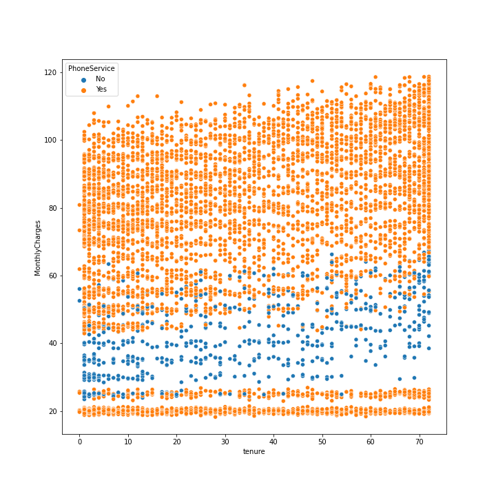

1 / 17
Perbandingan antara Jumlah Customer yang tidak Churn (0) dan Customer yang Churn (1)
2 / 17
Customer yang Churn (1) cenderung memiliki waktu berlangganan (tenure) yang lebih singkat dibanding customer yang tidak Churn (0)
3 / 17
Customer yang tidak Churn (0) cenderung memiliki tagihan per bulan (Monthly Charges) yang lebih sedikit dibanding customer yang Churn (1)
4 / 17
Customer yang Churn (1) cenderung memiliki total tagihan (Total Charges) yang lebih sedikit dibanding customer yang tidak Churn (0)
5 / 17
Customer yang tidak memiliki pasangan cenderung memiliki waktu berlangganan (tenure) yang lebih singkat dibanding customer yang memiliki pasangan
6 / 17

Hampir semua customer yang memiliki tagihan per bulan (Monthly Charges) sekitar 20 atau diatas 60 memiliki phone service
7 / 17

Hampir semua customer yang mengguanakan internet service Fiber Optic memiliki tagihan per bulan (Monthly Charges) yang paling tinggi sedangkan hampir semua customer yang tidak memiliki internet service memiliki tagihan per bulan (Monthly Charges) yang paling rendah dibandingkan dengan customer yang memiliki internet service
8 / 17
Customer tua (1) memiliki kemungkinan churn lebih besar dibanding customer muda (0)
9 / 17

Customer yang tidak memiliki pasangan memiliki kemungkinan churn lebih besar dibanding customer yang mempunyai pasangan
10 / 17
Customer yang tidak memiliki dependent memiliki kemungkinan churn lebih besar dibanding customer yang mempunyai dependent
11 / 17
Customer yang menggunakan internet fiber optic memiliki kemungkinan churn lebih besar dibanding customer yang menggunakan internet DSL dan tidak menggunakan layanan internet
12 / 17
Customer yang tidak menggunakan online security memiliki kemungkinan churn lebih besar dibanding customer yang menggunakan online security dan tidak menggunakan layanan internet
13 / 17
Customer yang tidak menggunakan online backup memiliki kemungkinan churn lebih besar dibanding customer yang menggunakan online backup dan tidak menggunakan layanan internet
14 / 17
Customer yang tidak menggunakan device protection memiliki kemungkinan churn lebih besar dibanding customer yang menggunakan device protection dan tidak menggunakan layanan internet
15 / 17
Customer yang tidak menggunakan tech support memiliki kemungkinan churn lebih besar dibanding customer yang menggunakan tech support dan tidak menggunakan layanan internet
16 / 17
Customer yang berlangganan per bulan memiliki kemungkinan churn lebih besar dibanding customer yang berlangganan per tahun dan berlangganan per 2 tahun
17 / 17
Customer yang menggunakan paperless billing memiliki kemungkinan churn lebih besar dibanding customer yang tidak menggunakan paperless billing
❮
❯